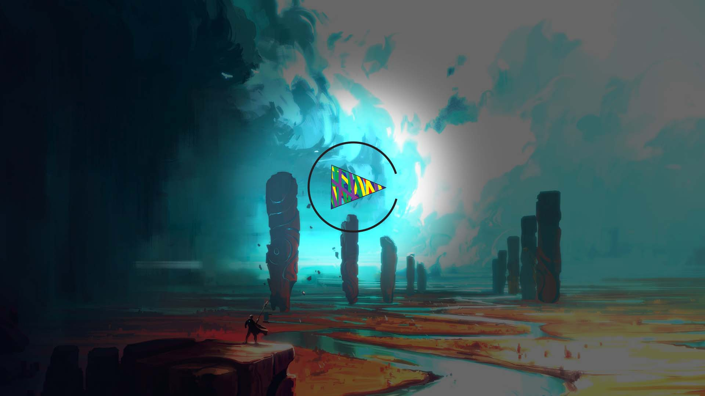
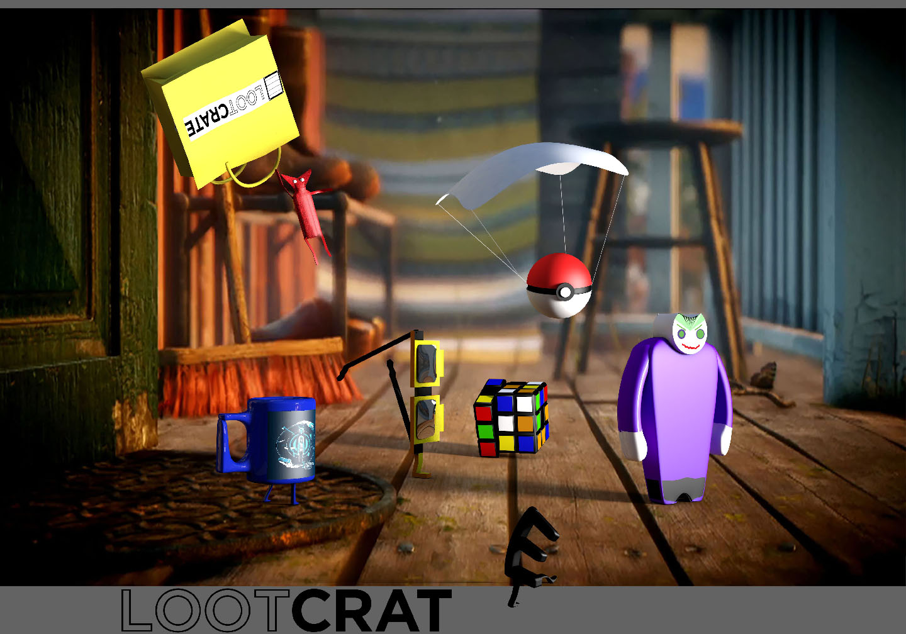
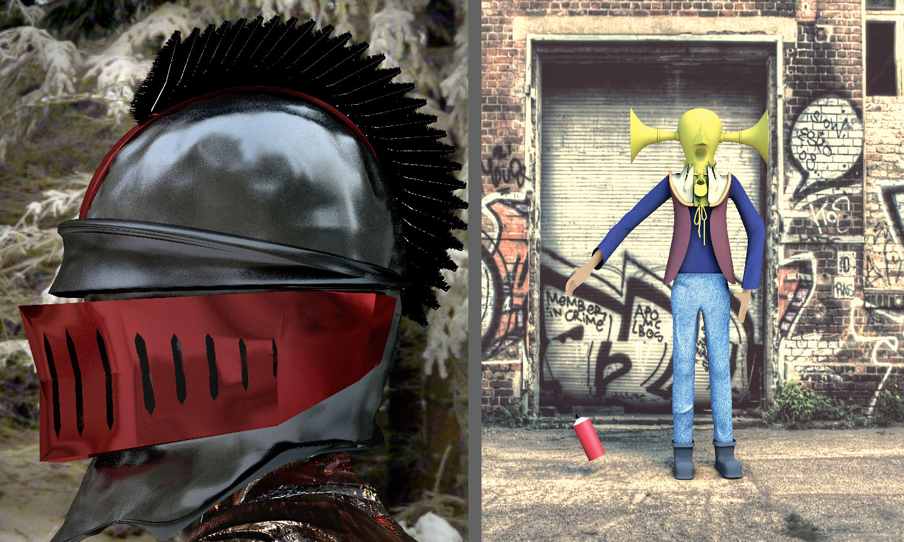

Game design has intrigued me since the rise of video game culture. While everyone likes to play them, including myself, I like to explore the slight technical side of videogames. The process is perhaps more interesting than playing the games. More astonishing is the fact that how much creativity and hardwork goes into their making.
While there are many different aspects of game design, one is of my extreme liking. 3d modelling, is the digital making of 3d objects in softwares like maya. These models are the one that you see in videogames, weather that be character models or the envirnoment itself. Everything you see in a game is designed, handcrafted by 3d modellers. I took ben voldmans class and instantly feel in love with it as it became my new hobby. These are some of my projects.
